Accurate Pain Perception / 准确的痛觉
Pressure becomes a visible route through the body.
项目从“情绪阻塞”出发，把经络、穴位与针灸刺激转译为包袋和身体配饰中的节点、绳结与拉力关系。
Leather, rope and copper are used as different kinds of pressure: the surface holds memory, the cord directs movement, and metal marks the point of release.
CONCEPTBlockage & release
LANGUAGENode & tension
OUTPUTBag + body object
02 / Design translation
Meridians become structure.
从情绪地图、身体穴位和绳结实验中提取轮廓；再通过技术图、样板、小样与材料实验，让象征语言获得真实的结构逻辑。
Research · sketch · prototype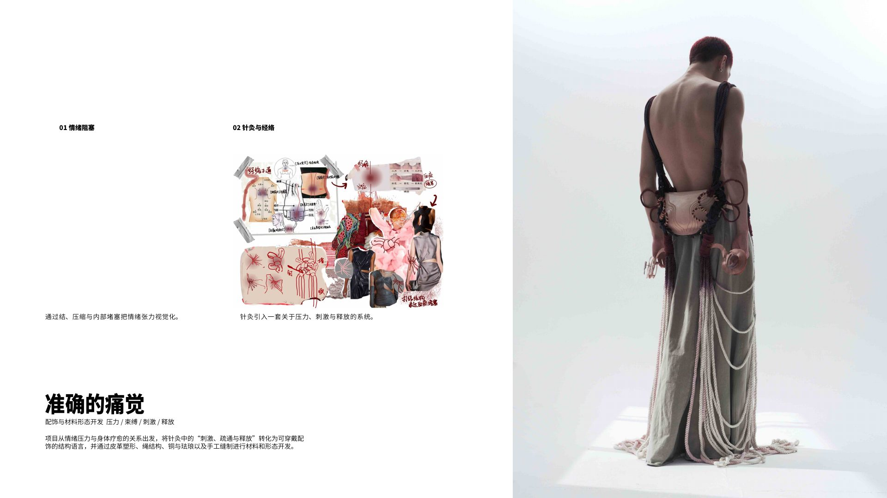
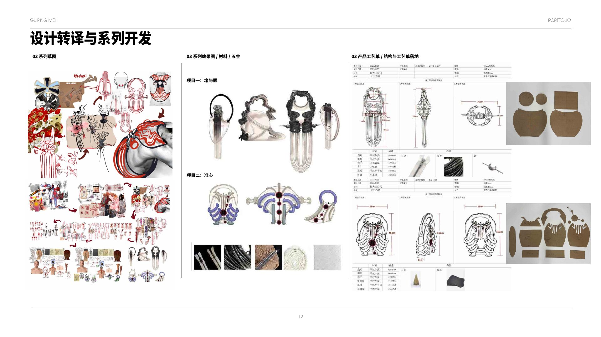
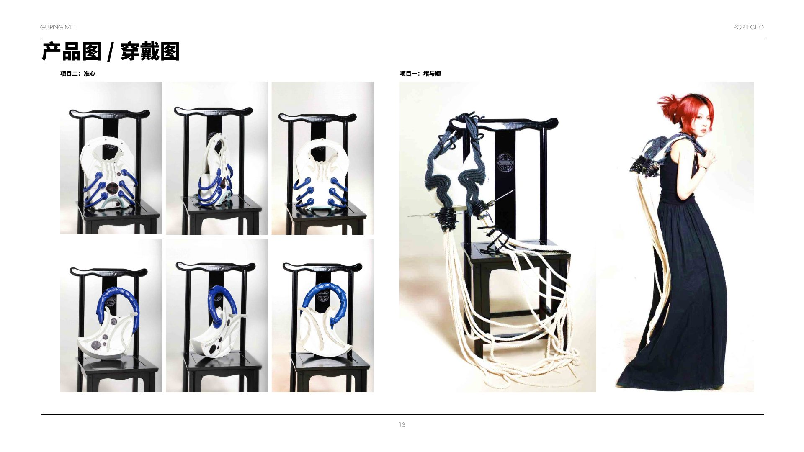
Material systemLeather sculpting · Rope structure · Copper / enamel · Hand stitch
03 / Making archive
The route is built, layer by layer.
经络图形被拆解为纸样、叠层皮革、软管与绳结；从桌面打样到完整包体，每一步都检验节点是否真的能承受拉力并保持轮廓。
Pattern · padded line · edge · assembly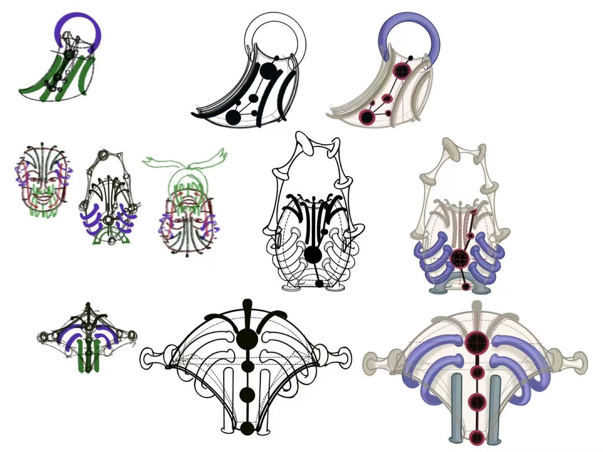
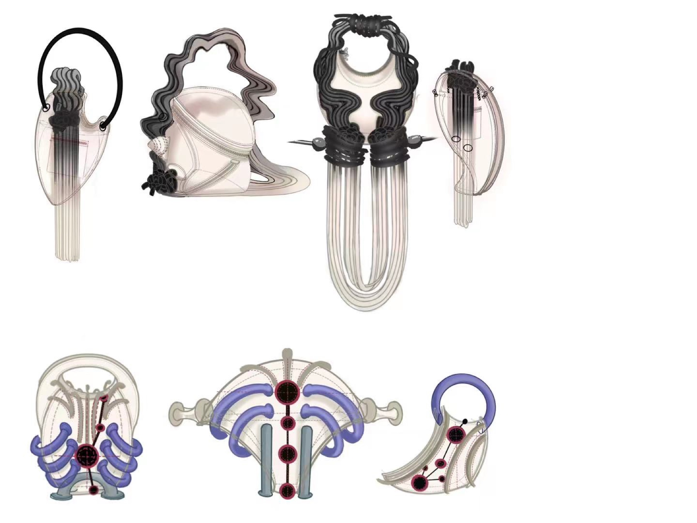
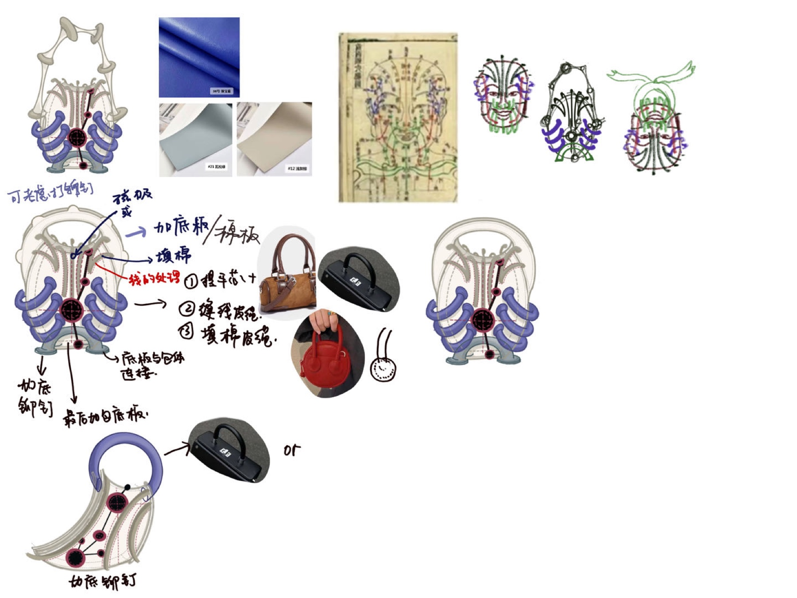
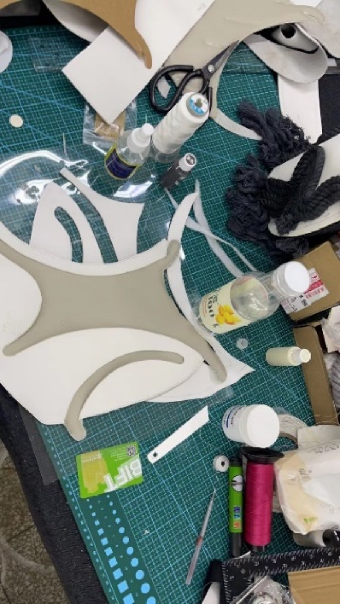
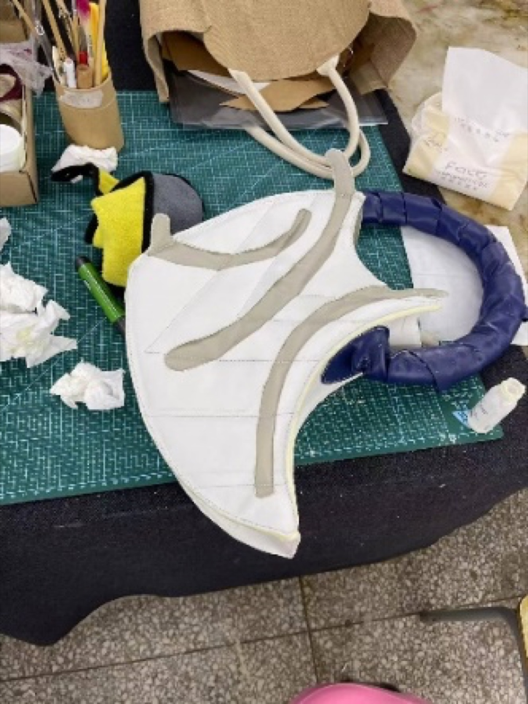
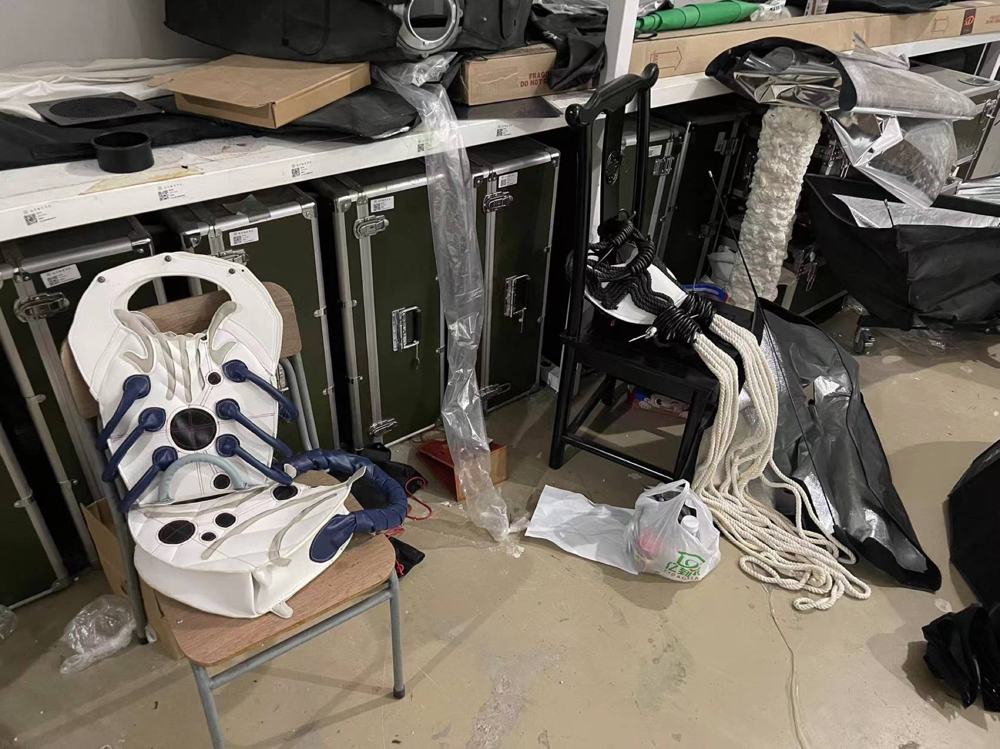
04 / Body interaction
Wearable tension, staged as healing.
两组包袋与身体装置沿头部、颈部和躯干建立不同路线。点击左侧视图，观察同一语言如何在“包袋、陈列与身体动作”之间变化。
Bag · object · headpiece · movement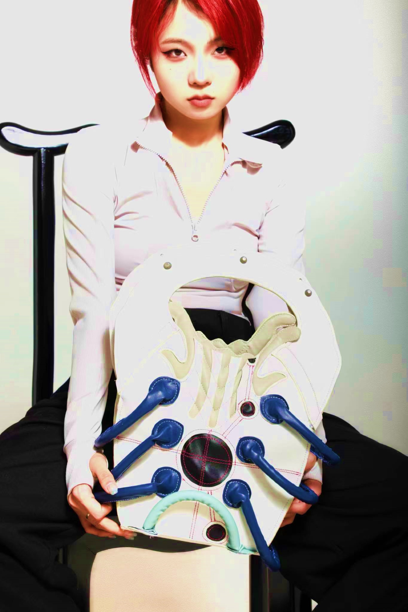
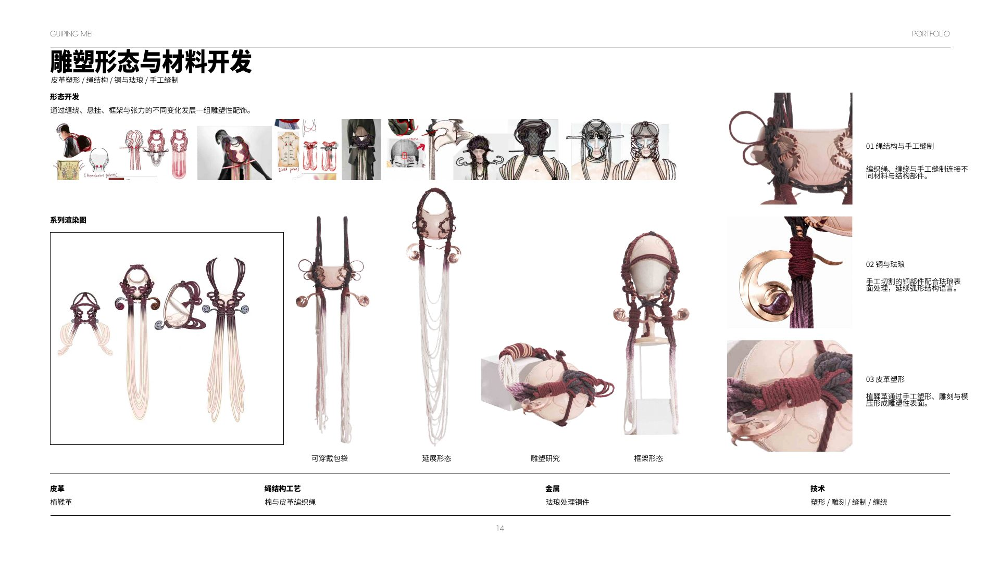
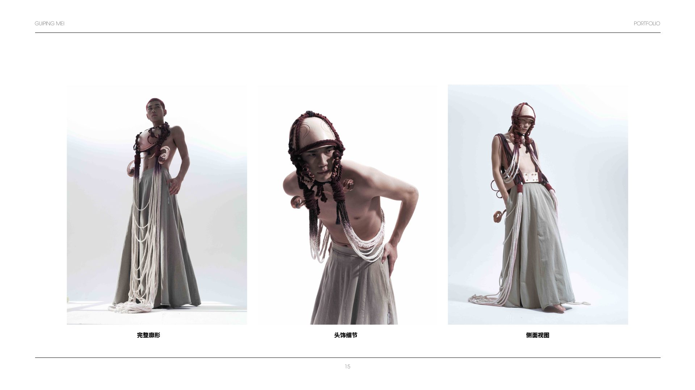
The project treats the bag as a sensory instrument: a structure that presses, connects and finally releases.
Next: Help Me Out A Little! →